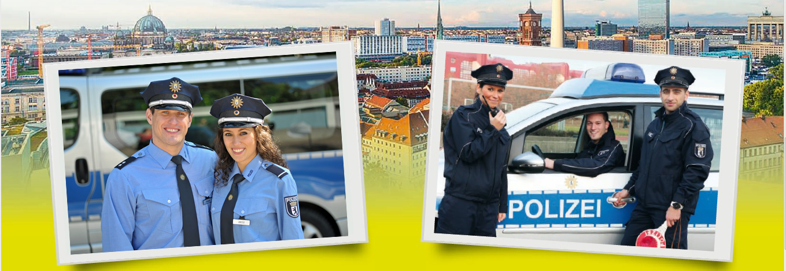
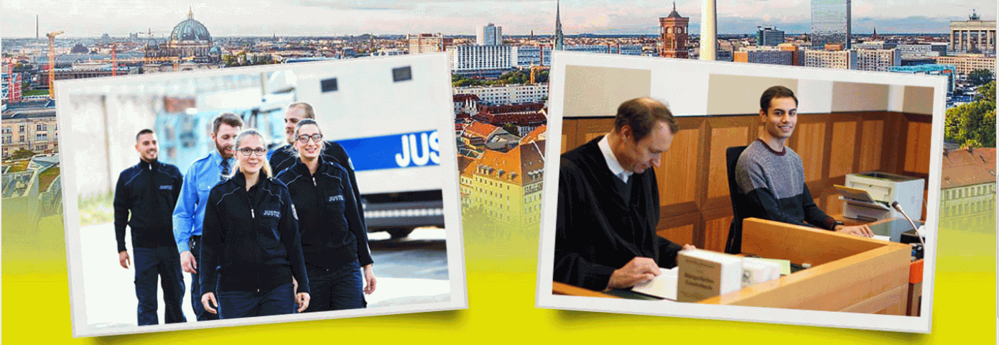

Polizei Berlin
Voraussetzungen und gezielte Übungen auf den Einstieg in eine Ausbildung bei der Polizei Berlin.
Zur PolizeiÖffentlicher Dienst Berlin
Interessieren Sie sich für die Polizei Berlin, die Berliner Justiz oder die Berliner Verwaltung? Der vollschulische Lehrgang der AVöD bietet Ihnen Übungen und Methoden für Auswahlverfahren, Einstellungstests und Einstieg — gemeinsam mit anderen Lernenden und mit fachlicher Kompetenz im BWK.
Die Ausbildungsvorbereitung stellt keine Schule im klassischen Sinne dar. Vielmehr können Sie Werkzeuge und Übungsformate nutzen, um sich optimal auf die Ausbildung im öffentlichen Dienst vorzubereiten.
Viele Teilnehmerinnen und Teilnehmer haben Bewerbungsverfahren oder Einstellungstests bereits durchlaufen – teils knapp ohne Erfolg. In einem weiteren Anlauf haben sie mit gezieltem Üben dann erfolgreich bestanden.
Die Dozentinnen und Dozenten stehen Ihnen bei Fragen zur Seite. Im Mittelpunkt steht jedoch Ihr eigenes Üben und Denken; das ist die gemeinsame Arbeitsgrundlage der AVöD.

Voraussetzungen und gezielte Übungen auf den Einstieg in eine Ausbildung bei der Polizei Berlin.
Zur Polizei
Orientierung zu Ausbildung und Studium in der Berliner Justiz — mit Blick auf die formalen Vorgaben.
Zur Justiz
Überblick zu Weg, Voraussetzungen und Ausbildung in der Berliner Verwaltung — als Grundlage für Ihre Bewerbung.
Zur VerwaltungDer AVÖD-Lehrgang wird im Auftrag der Senatsverwaltung für Arbeit, Soziales, Gleichstellung, Integration, Vielfalt und Antidiskriminierung durchgeführt und aus Mitteln des Landes Berlin gefördert.